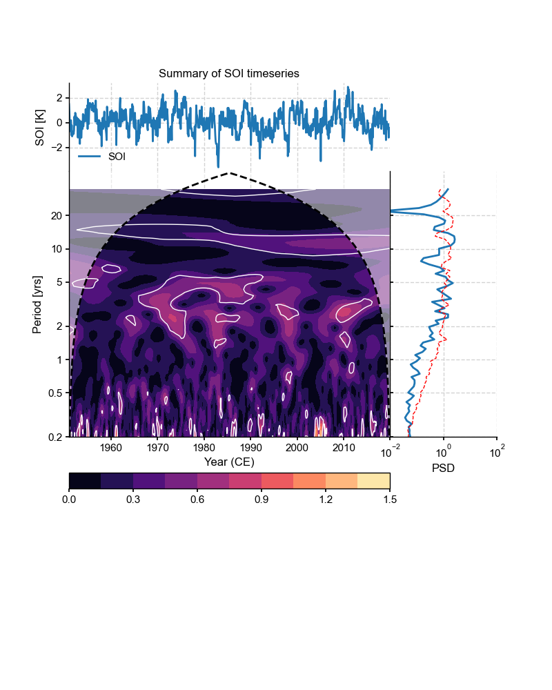

Series.summary_plot (pyleoclim.core.ui.Series.summary_plot)¶
-
pyleoclim.core.ui.Series.summary_plot(self, psd=None, scalogram=None, figsize=[8, 10], title=None, savefig_settings=None, time_lim=None, value_lim=None, period_lim=None, psd_lim=None, n_signif_test=100, time_label=None, value_label=None, period_label=None, psd_label=None, mute=False)¶ Generate a plot of the timeseries and its frequency content through spectral and wavelet analyses.
- Parameters
psd (PSD) – the PSD object of a Series. If None, will be calculated. This process can be slow as it will be using the WWZ method.
scalogram (Scalogram) – the Scalogram object of a Series. If None, will be calculated. This process can be slow as it will be using the WWZ method.
figsize (list) – a list of two integers indicating the figure size
title (str) – the title for the figure
time_lim (list or tuple) – the limitation of the time axis
value_lim (list or tuple) – the limitation of the value axis of the timeseries
period_lim (list or tuple) – the limitation of the period axis
psd_lim (list or tuple) – the limitation of the psd axis
n_signif_test=100 (int) – Number of Monte-Carlo simulations to perform for significance testing. Used when psd=None or scalogram=None
time_label (str) – the label for the time axis
value_label (str) – the label for the value axis of the timeseries
period_label (str) – the label for the period axis
psd_label (str) – the label for the amplitude axis of PDS
savefig_settings (dict) –
the dictionary of arguments for plt.savefig(); some notes below: - “path” must be specified; it can be any existed or non-existed path,
with or without a suffix; if the suffix is not given in “path”, it will follow “format”
”format” can be one of {“pdf”, “eps”, “png”, “ps”}
mute ({True,False}) – if True, the plot will not show; recommend to turn on when more modifications are going to be made on ax
See also
pyleoclim.core.ui.Series.spectral()Spectral analysis for a timeseries
pyleoclim.core.ui.Series.wavelet()Wavelet analysis for a timeseries
pyleoclim.utils.plotting.savefig()saving figure in Pyleoclim
pyleoclim.core.ui.PSD()PSD object
pyleoclim.core.ui.MultiplePSD()Multiple PSD object
Examples
Create a summary plot for the SOI dataset. Note: because the wwz method can be slow, only 10 AR1 models are generated in this example. For normal applications, we recommend at least 200.
In [1]: import pyleoclim as pyleo In [2]: import pandas as pd In [3]: from matplotlib import pyplot as plt In [4]: data=pd.read_csv('https://raw.githubusercontent.com/LinkedEarth/Pyleoclim_util/Development/example_data/soi_data.csv',skiprows=0,header=1) In [5]: time=data.iloc[:,1] In [6]: value=data.iloc[:,2] In [7]: ts=pyleo.Series(time=time,value=value,time_name='Year C.E', value_name='SOI', label='SOI') #Perform spectral analysis In [8]: psd=ts.spectral() # Significance testing In [9]: psd_signif=psd.signif_test(number=10) # Perform wavelet analysis In [10]: scal=ts.wavelet() # Significance testing In [11]: scal_signif = scal.signif_test(number=10) In [12]: fig, ax = ts.summary_plot( ....: scalogram=scal_signif, psd=psd_signif, ....: psd_lim=[1e-2, 1e2], ....: period_lim=[0.2, 50], ....: value_label='SOI [K]', ....: period_label='Period [yrs]', ....: time_label='Year (CE)', ....: psd_label='PSD', ....: title='Summary of SOI timeseries' ....: ) ....: <Figure size 800x1000 with 4 Axes> In [13]: plt.close(fig)